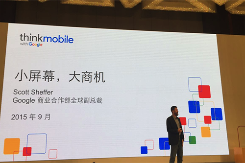

-
关于独角兽，除了十亿美元，还有另一种解读
他们在我们生活中也始终扮演着重要的角色，或是改变我们的生活，或是曾经让我们眼前一亮后迅速普及，慢慢我们都把他们当成理所当然。
-

即使在墙外，Google 也惦记着中国移动市场的生意
对于 Google 来说，中国和印度市场是其移动端布局不可获取的一部分。
-
避开K12战场，优儿学堂想以心理健康切入儿童心智成长服务
创始人苏德中为剑桥心理学博士毕业，曾任英国首相卡梅伦教改政策顾问。
-
 按需道路救援服务 Urgent.ly 获 700 万美元 A 轮融资
按需道路救援服务 Urgent.ly 获 700 万美元 A 轮融资和我们之前介绍过的 Honk 一样, Urgent.
-
 通过DIY为你打造专属进口红酒的“花马”，获得数百万天使融资
通过DIY为你打造专属进口红酒的“花马”，获得数百万天使融资红酒的毛利厚、复购率高以及市场增长快等，这几个特性吸引了不少创业者和投资人的兴趣。
-
 蛋糕可不可以有“潮”牌？Woh hol要试下
蛋糕可不可以有“潮”牌？Woh hol要试下提到时尚，很多人最先想到的都是时装，潮牌，很少会有人把经常见到的，多年没怎么变过的蛋糕同时尚联系起来。
-
 Apple也玩标签，但 Ving是标签中的 emoji
Apple也玩标签，但 Ving是标签中的 emojiAnyway，我们很期待。
-
 专利又曝光了，苹果或许要出智能戒指 (Apple Ring)
专利又曝光了，苹果或许要出智能戒指 (Apple Ring)标签，俨然已经成为现代人一种情绪和内容的表达方式，不想花费太多时间在文字介绍上，于是打上一个标签以概括内容。
-
 Google向媒体展示无人车
Google向媒体展示无人车Google的无人车已经完成了120万英里的公路行驶。
-
 为什么他们成了全球发展最快的公司？秘密也许就在他们的网站首页
为什么他们成了全球发展最快的公司？秘密也许就在他们的网站首页秘密就是简单
-
 关于独角兽，除了十亿美元，也许还有另一种解读
关于独角兽，除了十亿美元，也许还有另一种解读他们在我们生活中也始终扮演着重要的角色，或是改变我们的生活，或是曾经让我们眼前一亮后迅速普及，慢慢我们都把他们当成理所当然。
-
 即使在墙外，Google 也惦记着中国移动市场的生意
即使在墙外，Google 也惦记着中国移动市场的生意对于 Google 来说，中国和印度市场是其移动端布局不可获取的一部分。
-
 通过DIY为你打造专属进口红酒的“花马”，获得数百万天使融资
通过DIY为你打造专属进口红酒的“花马”，获得数百万天使融资红酒的毛利厚、复购率高以及市场增长快等，这几个特性吸引了不少创业者和投资人的兴趣。
-
当硬派的苹果选择了软性的内容，中国市场也成了库克最后的赌注
今天，Apple Music，iTunes movies 和 iBooks 在中国大陆正式落地。
-
曲奇单车希望做一款能解决普通用户的痛点的智能自行车
而今，智能自行车已经不是什么新鲜词了，duBike，乐视，BICI，700Bike，洛克菲勒等相继走入人们的视线，这些自行车大多都在设计，制造，智能化方面没少下工夫，然而对于普通用户的一些刚需，他们似乎考虑的还不够。
-
 船只整合、路线规划、酒店住宿，去海钓想做海钓爱好者的一站式服务平台
船只整合、路线规划、酒店住宿，去海钓想做海钓爱好者的一站式服务平台关于中国海钓人群的具体数字，我找了半天也没找到，能查到的两个数字分别是 30 万（专业级别）和 40 万。
-
 特斯拉 Model X正式发布，最远续航413公里，官方售价未公布
特斯拉 Model X正式发布，最远续航413公里，官方售价未公布此次共发布P90D和90D两款车型，百公里加速最快3.2秒，第一批量产车即将交付
-
 caoz：创业公司如何做好信息安全
caoz：创业公司如何做好信息安全最近安全类事件繁多，创业者们，注意一下。
-
 Feedly 是否会利用 Share Collection 打造订阅社群？
Feedly 是否会利用 Share Collection 打造订阅社群？Feedly 近期添加了一个新的功能——Share Collection。
-
 当我们还在谈论如何智能制造时，GE已经在做应用商店了
当我们还在谈论如何智能制造时，GE已经在做应用商店了GE 推出应用商店并非单纯地进军软件领域，而是借此完善产品的后续服务，补全产品线。商店内的 app 不是面向普通消费者，而是旨在帮助制造从业者们更好地了解和使用 GE 机器。
-
Twitter的自我革命：打破140字的舒适圈
我们之前对Twitter的预感，看来是正确的……
-
 Snapchat 的GIF 头像是为了促进陌生人交友么？
Snapchat 的GIF 头像是为了促进陌生人交友么？Snapchat 作为阅后即焚应用的鼻祖，一直以来秉承着匿名、私密的性质。
-
 斯诺登开通Twitter账号，第一粉献给美国国家安全局
斯诺登开通Twitter账号，第一粉献给美国国家安全局"Can you hear me now?